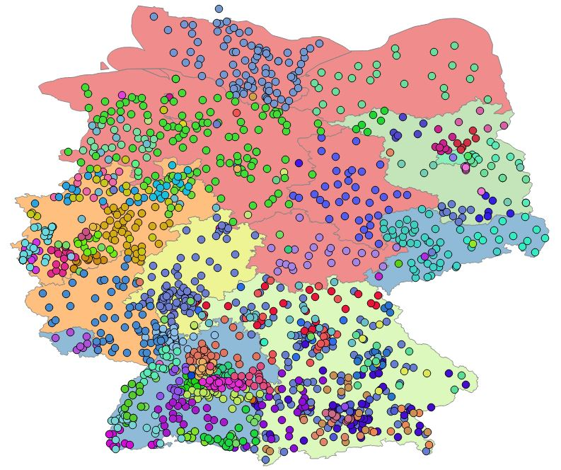

Es gibt über 100 verschiedene Onleihen in Deutschland.
In den Bundesländern mit einem einzigen Bibliotheksverbund ist der Gesamtbestand an Medien deutlich höher als bei kleinen Verbunden. Niedersachsen schließt auf, und im Saarland gibt es auch schon einen gemeinsamen Verbund.
Schlusslichter sind NRW, Bayern und Baden Wüttemberg. In diesen Bundesländern gibt es mehrere Verbunde, die sich sogar teilweise überschneiden. Der deutschlandweite Durchschnitt liegt bei rund 20.000 eBooks
Anzahl der Medien (eBooks) - Top 6 Bundesländer:
Juli 2016 bis Januar 2017 (überschlagen)
Hessen: 44000 - 52000
Rheinland-Pfalz: 33000 - 37000
*Thüringen: 31000 - 34000
*Mecklenburg Vorpommern: 30000 - 35000
Sachsen-Anhalt: 28000 - 32000
Schleswig-Holstein: 25000 - 27000
Fazit: Ein bundeslandweiter Onleihe-Verbund kann mehr Medien anbieten. Eigentlich logisch, oder?
Wünschensert wäre ein deutschlandweiter Onleihe-Verbund, der in der Lage wäre wesentlich mehr Medien für alle Bürger bereit zu stellen.